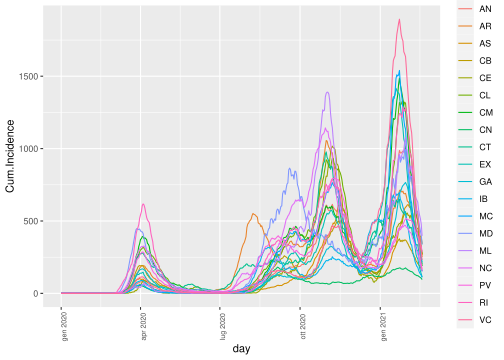

Bayes-DL Covid-19
2021-02-22 15:18:09
1 Data preparation
Data are downloaded from https://cnecovid.isciii.es/covid19/#documentaci%C3%B3n-y-datos. Such data are supposed to represent values day by day of COVID-19 incidence for regions (CCAA) in Spain.
ccaa.lab=c("AN", "AR", "AS", "CB", "CE", "CL", "CM", "CN", "CT",
"EX", "GA","IB", "MC", "MD", "ML", "NC","PV", "RI", "VC")
cvirus.ccaa=read.table("https://cnecovid.isciii.es/covid19/resources/casos_diag_ccaadecl.csv",
sep = ",", header = T)
maxr=max(which(cvirus.ccaa$fecha==max(cvirus.ccaa$fecha)))
cvirus.ccaa$ccaa_iso=factor(cvirus.ccaa$ccaa_iso)
cvirus.ccaa=data.frame(region=cvirus.ccaa$ccaa_iso,
day=as.Date(as.character(cvirus.ccaa$fecha),
format="%Y-%m-%d"),
cases=cvirus.ccaa$num_casos)
pop=read.table("demcca.csv",header = TRUE,sep=";")
pop=data.frame(region=pop$CCAA,pop=pop$pob)[1:19,]
pop=pop[order(pop$region),]
pop$w=pop$pop/sum(pop$pop)The statistical unit is the day and variables are cumulative cases of the past 14 days up to the day in each one of the 19 Spanish regions (CCAA).
cvirus.ccaa.fat=dcast(cvirus.ccaa,formula = day~region,value.var = "cases")
for(j in 2:ncol(cvirus.ccaa.fat)){
y=cvirus.ccaa.fat[,j]
y=c(rep(0,13),y)
y=cumsum(y)
y=y[14:length(y)]-y[1+(0:(length(y)-14))]
cvirus.ccaa.fat[,j]=as.integer((y/pop$pop[pop$region==colnames(cvirus.ccaa.fat)[j]])*100000)
}
cvirus=cvirus.ccaa.fat
dim(cvirus)## [1] 415 20We have 415 days (in the range , -) and 20 variables which represent the cumulative incidence at 14 days per 100000 people along the regions.
These are daily cumulative 14 days incidence :
meltdat=melt(cvirus,id="day",variable.name = "region",
value.name = "Cum.Incidence")
p=ggplot(meltdat, aes(x =day, y = Cum.Incidence,color=region))+
geom_line()+
theme(axis.text.x = element_text(angle = 90,size=rel(0.8)))
p
## svg
## 2